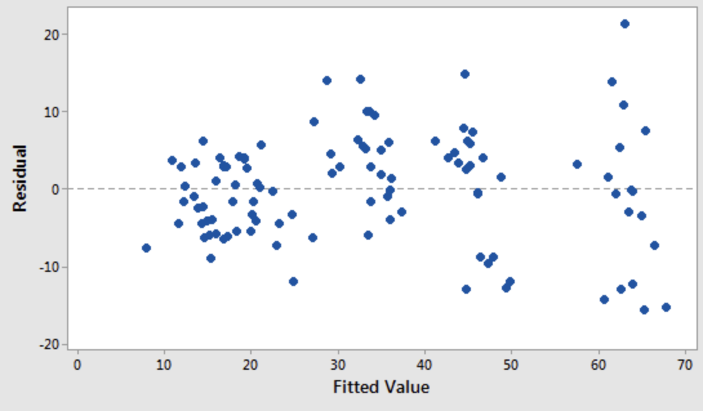

Feature Engineering & Variable Selection
Applied Machine Learning
Agenda
- Review of Homework 1
- Feature Engineering I
- Dinner Break
- The Caret framework
- Vocabulary
Packages
- Today I use the following libraries:
local({r <- getOption("repos")
r["CRAN"] <- "https://cran.r-project.org"
options(repos=r)
})
# Old
# install.packages("tidyverse")
# install.packages("caret")
# New?
install.packages("fastDummies")
# Just for the slides
# install.packages("thematic")- You will have some but perhaps not others.
Libraries
- I’ll just include them upfront.
Setup
- We will work with a
winedataset that is enormous.- Just to render a bit quickly, take a sample.
- You are welcome to work with the full dataset!
wine <- readRDS(gzcon(url("https://cd-public.github.io/courses/rmls25/dat/wine.rds")))
# performance concession
# wall <- wine
# wine = wall[sample(nrow(wall), 100), ]
summary(wine) id country description designation
Min. : 1 Length:89556 Length:89556 Length:89556
1st Qu.: 32742 Class :character Class :character Class :character
Median : 65613 Mode :character Mode :character Mode :character
Mean : 65192
3rd Qu.: 97738
Max. :129970
points price province region_1
Min. : 80.00 Min. : 4.00 Length:89556 Length:89556
1st Qu.: 87.00 1st Qu.: 17.00 Class :character Class :character
Median : 89.00 Median : 25.00 Mode :character Mode :character
Mean : 88.65 Mean : 35.56
3rd Qu.: 91.00 3rd Qu.: 42.00
Max. :100.00 Max. :3300.00
region_2 taster_name taster_twitter_handle title
Length:89556 Length:89556 Length:89556 Length:89556
Class :character Class :character Class :character Class :character
Mode :character Mode :character Mode :character Mode :character
variety winery year
Length:89556 Length:89556 Min. :1995
Class :character Class :character 1st Qu.:2010
Mode :character Mode :character Median :2012
Mean :2011
3rd Qu.:2014
Max. :2015 Feature Engineering
Group Exercise (30m)
- Identify 3 “interesting” features of the wine dataset
- Bonus
- ∃ Critic “Roger Voss”
- ∃ a wine varietal(s) “Voss” seems to dislike
- Find said varietal.
Categorical vs. Continuous
- What is a categorical variable?
- What is a continuous variable?
- Why visualize at the data before modeling it?
Categorical Example 1

Categorical Example 2

Exercise (15 min)
- Group by winery and year, Find:
- The average score, and
- Number of reviews.
- Find year-on-year change in score by winery.
- How might you use this in prediction?
- What kind of problem might it help with?
Year-on-Year Change Example
wine %>%
group_by(winery, year) %>%
summarize(avg_score = mean(points), num_reviews = n_distinct(id)) %>%
select(year, winery, num_reviews, avg_score) %>%
arrange(winery, year) %>%
mutate(score_change = avg_score - lag(avg_score)) %>%
drop_na(score_change) %>%
summarize(mean(score_change))# A tibble: 8,409 × 2
winery `mean(score_change)`
<chr> <dbl>
1 100 Percent Wine -1.5
2 12 Linajes -0.333
3 12C Wines 1.25
4 14 Hands -0.111
5 2 Lads -2.25
6 2 Up 0
7 21 Grams 1
8 29 & Oak Wines -2
9 2Hawk 0.75
10 2Plank -1.25
# ℹ 8,399 more rowsDummy Variables
- What are Dummy Variables?:
- Represent categories as 0s and 1s for models.
- Represent categories as 0s and 1s for models.
- Why Use Dummy Variables?:
- Handle categorical data in numerical algorithms.
- Handle categorical data in numerical algorithms.
- Avoid Dummy Trap:
- Drop one column to prevent multicollinearity.
Many vs Few Dummies
- Few Dummies:
- Simplifies models, risks losing fine-grained patterns.
- Many Dummies:
- Captures detailed trends, increases model complexity.
- Key Decision:
- Balance interpretability and predictive power.
“fastDummies” Package
- Purpose:
- Quickly create dummy variables in R datasets.
- Key Functions:
dummy_cols()adds dummy columns efficiently.
- Features:
- Handles multiple columns and missing data flexibly.
Few Dummies
# A tibble: 6 × 4
taster_name `taster_name_Alexander Peartree` taster_name_Anna Lee C. …¹
<chr> <int> <int>
1 Roger Voss 0 0
2 Paul Gregutt 0 0
3 Alexander Peartree 1 0
4 Paul Gregutt 0 0
5 Michael Schachner 0 0
6 Kerin O’Keefe 0 0
# ℹ abbreviated name: ¹`taster_name_Anna Lee C. Iijima`
# ℹ 1 more variable: `taster_name_Anne Krebiehl MW` <int>Many Dummies
# A tibble: 6 × 6
variety variety_Cabernet Sauvigno…¹ variety_Chardonnay `variety_Pinot Noir`
<fct> <int> <int> <int>
1 Other 0 0 0
2 Other 0 0 0
3 Other 0 0 0
4 Pinot Noir 0 0 1
5 Other 0 0 0
6 Other 0 0 0
# ℹ abbreviated name: ¹`variety_Cabernet Sauvignon`
# ℹ 2 more variables: `variety_Red Blend` <int>, variety_Other <int>Other types of engineered categorical features…
- Words or phrases in text
- A given time period
- An arbitrary numerical cut-off
- Demographic variables
What about numerical features?

Take the natural log

Standardizing
- Create a common scale across variables.
- Mean-centering \(x-\bar{x}\)
- Scaling: \(x/std(x)\)
- Helps reduce bias when interactions are included.
- (i.e. eliminates variance inflation).
Other transformations.
- I use logs > 95% of the time, standarizing ~40%.
- There are many other transformations:
- YoY, QoQ, etc. (absolute and percent)
- log
- polynomial transforms
- lags!
Standardize
list(normalized = ~(scale(.) %>% as.vector)): :scale(.): Standardizes the “points” column.%>% as.vector: Converts back to a vector.
# A tibble: 89,556 × 16
id country description designation points price province region_1 region_2
<dbl> <chr> <chr> <chr> <dbl> <dbl> <chr> <chr> <chr>
1 1 Portug… This is ri… Avidagos 87 15 Douro <NA> <NA>
2 2 US Tart and s… <NA> 87 14 Oregon Willame… Willame…
3 3 US Pineapple … Reserve La… 87 13 Michigan Lake Mi… <NA>
4 4 US Much like … Vintner's … 87 65 Oregon Willame… Willame…
5 5 Spain Blackberry… Ars In Vit… 87 15 Norther… Navarra <NA>
6 6 Italy Here's a b… Belsito 87 16 Sicily … Vittoria <NA>
7 7 France This dry a… <NA> 87 24 Alsace Alsace <NA>
8 8 Germany Savory dri… Shine 87 12 Rheinhe… <NA> <NA>
9 9 France This has g… Les Natures 87 27 Alsace Alsace <NA>
10 10 US Soft, supp… Mountain C… 87 19 Califor… Napa Va… Napa
# ℹ 89,546 more rows
# ℹ 7 more variables: taster_name <chr>, taster_twitter_handle <chr>,
# title <chr>, variety <chr>, winery <chr>, year <dbl>, standardized <dbl>Interaction effects
This chapter has a good overview of interactions.
- Start with domain knowledge.
- Use visualizations.
- 3-way interactions exist, but are rare.
- If you suspect a 3-way, also suspect your suspicions.
- Complexity increases exponentially in “ways”.
- These are notoriously hard to explain.
Dinner (and virtual high fives)

Le Bibliothèques caret
Philosophy
Types of resampling
- V-fold Cross-Validation
- Divides data into \(k\) folds, trains on \(k−1\) folds, validates on the remaining fold, for all folds.
- Monte Carlo Cross-Validation
- Randomly splits data into training and validation sets multiple times, averaging results for evaluation.
- The Bootstrap
- Uses resampling with replacement to estimate model accuracy and variability.
Setup the Dataframe
- Follow this link for the full documentation on caret.
- Off hand, I would’ve standarized points as well, but
- We’re following Jameson’s code…
- …who understands the data better.
Split Samples
wine_index <- createDataPartition(wino$lprice, p = 0.8, list = FALSE)
wino_tr <- wino[wine_index, ]
wino_te <- wino[-wine_index, ]
summary(wino_tr) lprice points fr cab
Min. :1.386 Min. : 80.00 Mode :logical Mode :logical
1st Qu.:2.833 1st Qu.: 87.00 FALSE:59491 FALSE:65267
Median :3.219 Median : 89.00 TRUE :12112 TRUE :6336
Mean :3.315 Mean : 88.64
3rd Qu.:3.738 3rd Qu.: 91.00
Max. :8.102 Max. :100.00 Train the model
- Configure
trainto cross validate
m1 <- train(lprice ~ .,
data = wino_tr,
method = "lm",
trControl = trainControl(method = "repeatedcv", number = 5, repeats = 3)
)
m1Linear Regression
71603 samples
3 predictor
No pre-processing
Resampling: Cross-Validated (5 fold, repeated 3 times)
Summary of sample sizes: 57283, 57281, 57283, 57281, 57284, 57283, ...
Resampling results:
RMSE Rsquared MAE
0.5118305 0.3949086 0.4030389
Tuning parameter 'intercept' was held constant at a value of TRUERMSE outputs
RMSE Rsquared MAE Resample
1 0.5123392 0.3922985 0.4043151 Fold1.Rep1
2 0.5042570 0.4047914 0.3967808 Fold2.Rep1
3 0.5113161 0.3952375 0.4036083 Fold3.Rep1
4 0.5150833 0.3929527 0.4040149 Fold4.Rep1
5 0.5161066 0.3894547 0.4064822 Fold5.Rep1
6 0.5076583 0.4047581 0.4000936 Fold1.Rep2
7 0.5113980 0.3918123 0.4025944 Fold2.Rep2
8 0.5141958 0.3868834 0.4057213 Fold3.Rep2
9 0.5159584 0.3844734 0.4047169 Fold4.Rep2
10 0.5099482 0.4065265 0.4020638 Fold5.Rep2
11 0.5136715 0.3919605 0.4037877 Fold1.Rep3
12 0.5091766 0.4083246 0.4017391 Fold2.Rep3
13 0.5096613 0.3943860 0.4020641 Fold3.Rep3
14 0.5133633 0.3908561 0.4036423 Fold4.Rep3
15 0.5133237 0.3889129 0.4039583 Fold5.Rep3Train vs. test
Linear Regression
71603 samples
3 predictor
No pre-processing
Resampling: Cross-Validated (5 fold, repeated 3 times)
Summary of sample sizes: 57283, 57281, 57283, 57281, 57284, 57283, ...
Resampling results:
RMSE Rsquared MAE
0.5118305 0.3949086 0.4030389
Tuning parameter 'intercept' was held constant at a value of TRUEGroup Exercise (30+ minutes)
- Create 5-10 new features (in addition to points)
- Create training and test data
- For each, train a linear model for log(price)
- Report RMSE on test set and cross-validated score.
- (Re-)Engineer new(ish) features to lower the RMSE.
Feature selection
Stepwise selection
- What is Stepwise Selection?: Iterative method to add or remove predictors in a model based on statistical criteria.
- Types: Forward selection starts with no predictors; backward elimination starts with all predictors; stepwise combines both.
- Goal: Identify a model with strong predictive power and minimal overfitting.
Stepwise selection is bad
Harrell (2015) provides a comprehensive indictment of the method that can be encapsulated by the statement:
“… if this procedure had just been proposed as a statistical method, it would most likely be rejected because it violates every principle of statistical estimation and hypothesis testing.”
Reference: Harrell, F. 2015. Regression Modeling Strategies. Springer.
Engineer 9 features
wino <- wine %>%
mutate(country = fct_lump(country, 4)) %>% # 1:4,
mutate(variety = fct_lump(variety, 4)) %>% # 5:8,
mutate(lprice = log(price)) %>% # 9
select(lprice, points, country, variety) %>%
drop_na(.)
head(wino)# A tibble: 6 × 4
lprice points country variety
<dbl> <dbl> <fct> <fct>
1 2.71 87 Other Other
2 2.64 87 US Other
3 2.56 87 US Other
4 4.17 87 US Pinot Noir
5 2.71 87 Spain Other
6 2.77 87 Italy Other Add Dummy Columns
- Careful - a destructive update to
wino!
renamer <- function(s) {
s %>% tolower() %>% str_replace("-| ", "_")
}
wino <- wino %>%
dummy_cols(remove_selected_columns = TRUE) %>%
rename_with(.fn = renamer) %>%
select(-ends_with("other"))
head(wino)# A tibble: 6 × 10
lprice points country_france country_italy country_spain country_us
<dbl> <dbl> <int> <int> <int> <int>
1 2.71 87 0 0 0 0
2 2.64 87 0 0 0 1
3 2.56 87 0 0 0 1
4 4.17 87 0 0 0 1
5 2.71 87 0 0 1 0
6 2.77 87 0 1 0 0
# ℹ 4 more variables: variety_cabernet_sauvignon <int>,
# variety_chardonnay <int>, variety_pinot_noir <int>, variety_red_blend <int>Basic Model
- Partition
- We would model the same way, so let’s take aside.
Aside: Factoring
- Same modelling command
mx <- train(lprice ~ .,
data = wino_tr,
method = "lm",
trControl = trainControl(method = "repeatedcv", number = 5, repeats = 3)
)- I should factor this into a function.
Train vs. test
Linear Regression
71603 samples
9 predictor
No pre-processing
Resampling: Cross-Validated (5 fold, repeated 3 times)
Summary of sample sizes: 57284, 57282, 57282, 57282, 57282, 57282, ...
Resampling results:
RMSE Rsquared MAE
0.4897934 0.4442954 0.3806687
Tuning parameter 'intercept' was held constant at a value of TRUEVariable Importance
- Importance depends on model used…

Variable Importance
- Each (linear model) coefficient has a standard error,
- Measures certainty of coefficient given data.
- For the t-statistic,
- Confidence that the coefficient is different from 0
- We divide the coefficient by the standard error.
- If “small” error relative to coefficient
- Then “big” t-statistic & high feature importance!
- What about coefficient as variable importance?
Recursive Feature Elimination
- Tune/train the model on the training set using all predictors.
- Calculate model performance.
- Calculate variable importance or rankings.
- for each subset size \(S_i\), i = 1…S do
- Keep the \(S_i\) most important variables.
- [Optional] Pre-process the data.
- Tune/train the model on the training set using \(S_i\) predictors.
- Calculate model performance.
- [Optional] Recalculate the rankings for each predictor.
- end
- Calculate the performance profile over the \(S_i\).
- Determine the appropriate number of predictors.
- Use the model corresponding to the optimal \(S_i\).
Size Drop
- It did not seem like 2024
rcould handle 90k wine samples. - We drop to the 1k data set for this demonstration.
- There are ways to address performance.
- I say: Out-of-scope.
Partition Again
- Partition
Caret RFE
control <- rfeControl(functions = rfFuncs, method = "cv", number = 2)
# run the RFE algorithm
results <- rfe(select(wino_tr, -lprice), wino_tr$lprice, sizes = c(1:3), rfeControl = control)
# summarize the results
print(results)
Recursive feature selection
Outer resampling method: Cross-Validated (2 fold)
Resampling performance over subset size:
Variables RMSE Rsquared MAE RMSESD RsquaredSD MAESD Selected
1 0.5108 0.4494 0.4043 0.0037128 0.001091 0.006783
2 0.5215 0.4643 0.4035 0.0083677 0.015668 0.004914
3 0.5439 0.4479 0.4209 0.0095033 0.021913 0.006884
9 0.4882 0.5096 0.3796 0.0003617 0.004904 0.003946 *
The top 5 variables (out of 9):
points, country_us, variety_pinot_noir, country_italy, variety_cabernet_sauvignonSee Results
Plot Results

Practical Workflow
Key Terms
- Feature Engineering
- Categorical Feature
- Continuous Feature
- Dummy
- Interaction
- Caret
- Model
- Resampling
- Train vs. Test Data
- Variable Importance
Bonus Slides:
Linear Regression
5 Assumptions of Linear Regression
Linear regressions have a well-developed statistical theory.
This brings perks like confidence intervals on predictions.
It also has “costs” in that assumptions need to be satisfied.
The Five
- Linearity
- Constant variance
- Normality
- Imperfect multicollinearity
- Exogeneity
1. Linearity
The dependent variable is a linear combination of the features.
This is less of big deal than it might seem!
If y is actually quadratic in x, then y is linear in x^2!
- That’s feature engineering.
2. Constant variance
Or homoscedasticity
The variance of the errors do not depend on the values of the features.
Don’t make bigger prediction errors for some values of x than for others.
3. Normality
The errors should be independent and normally distributed.
A scatter plot of target variable value and residual (model error) should look like white noise.
4. Lack of perfect multicollinearity
None predictors should be a perfect linear combination of others.
This can happen if you over-engineer features
- This is uncommon.
- You’ll see an error that your coefficient matrix is singular or something.
5. Exogeneity
Model errors should be independent of the values of the features.
In particular, errors should have mean zero.
It’s always good to look at a histogram of your residuals (see also normality).
First Test
- Determine whether the errors are normally distributed, like Shapiro-Wilk (also, plot them).
5 Assumptions of Linear Regression: testing
- Second I would always look at fitted value vs. residual to check homoscedasticity.


- For more, see for example https://people.duke.edu/~rnau/testing.htm